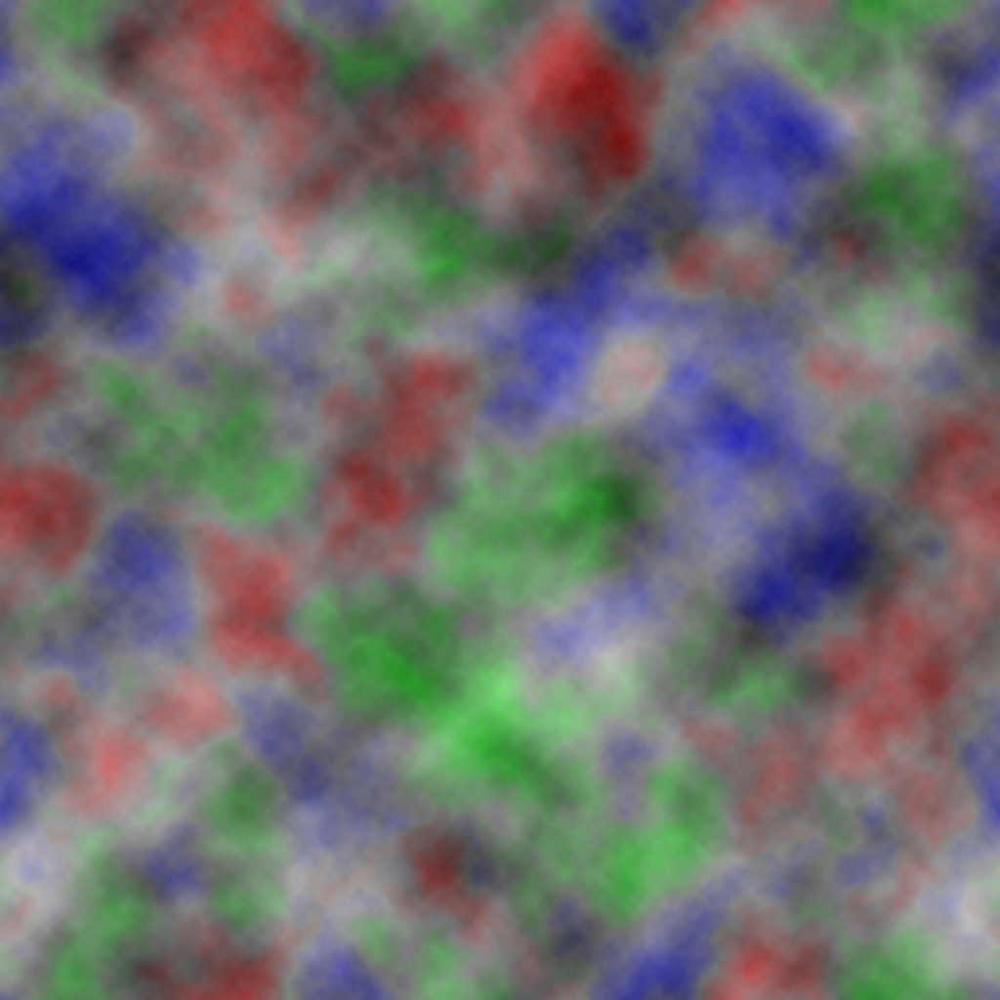

Welcome to the Men At Arms!
Controls:
- Use First Click to drag the map around.
- Press A to toggle between Sniper and Infantry Squad Types.
- Press Q to increase Squad Deployment Size and W to increase it.
- Press Right Mouse Button to deply a Squad with current settings. You can't place two sqauds very close.
- Press Right Mouse Button on pre-existing squad to know it's status.
